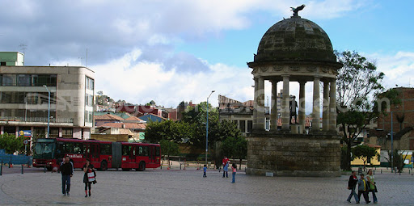
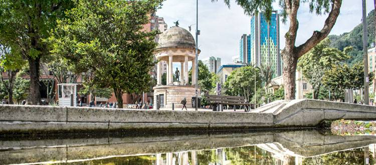

Bogotá es la extensa capital en altura de Colombia. La Candelaria, su centro con adoquines, cuenta con sitios coloniales como el Teatro Colón neoclásico y la Iglesia de San Francisco del siglo XVII. También alberga museos populares, incluido el Museo Botero, que exhibe arte de Fernando Botero, y el Museo del Oro, con piezas de oro precolombinas.
A causa de su gran altitud, Bogotá tiene un clima de montaña; por su baja latitud presenta una escasa oscilación térmica a lo largo del año. Las temperaturas regularmente oscilan entre los 5 y 19 °C, con una media anual de 13.7 °C. El mes más cálido es mayo con una temperatura media de alrededor de 14 °C. Con promedios de 13 °C y una mínima media de 6 °C, enero es el mes más frío. El mes más lluvioso es octubre, con 111 mm de precipitación, mientras que enero, con 28 mm, es el mes más seco.